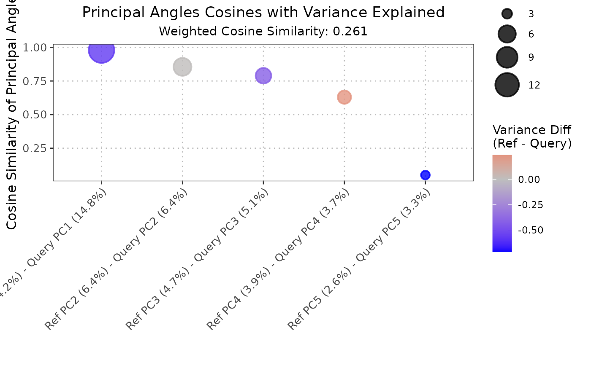

Compare Subspaces Spanned by Top Principal Components
Source:R/comparePCASubspace.R, R/plot.comparePCASubspaceObject.R
comparePCASubspace.RdThis function compares the subspace spanned by the top principal components (PCs) in a reference dataset to that in a query dataset. It computes the cosine similarity between the loadings of the top variables for each PC in both datasets and provides a weighted cosine similarity score.
The S3 plot method generates a visualization of the output from the comparePCASubspace function.
The plot shows the cosine of principal angles between reference and query principal components,
with point sizes representing the variance explained and colors showing the difference in variance between datasets.
Usage
comparePCASubspace(
query_data,
reference_data,
query_cell_type_col,
ref_cell_type_col,
pc_subset = 1:5,
n_top_vars = 50
)
# S3 method for class 'comparePCASubspaceObject'
plot(x, ...)Arguments
- query_data
A
SingleCellExperimentobject containing numeric expression matrix for the query cells.- reference_data
A
SingleCellExperimentobject containing numeric expression matrix for the reference cells.- query_cell_type_col
The column name in the
colDataofquery_datathat identifies the cell types.- ref_cell_type_col
The column name in the
colDataofreference_datathat identifies the cell types.- pc_subset
A numeric vector specifying the subset of principal components (PCs) to compare. Default is the first five PCs.
- n_top_vars
An integer indicating the number of top loading variables to consider for each PC. Default is 50.
- x
A numeric matrix output from the
comparePCASubspacefunction, representing cosine similarities between query and reference principal components.- ...
Additional arguments passed to the plotting function.
Value
A list containing the following components:
- cosine_similarity
A numeric vector of cosine values of principal angles.
- cosine_id
A matrix showing which reference and query PCs were matched.
- var_explained_ref
A numeric vector of variance explained by reference PCs.
- var_explained_query
A numeric vector of variance explained by query PCs.
- var_explained_avg
A numeric vector of average variance explained by each PC pair.
- weighted_cosine_similarity
A numeric value representing the weighted cosine similarity.
The S3 plot method returns a ggplot object representing the cosine similarities with variance information.
Details
This function compares the subspace spanned by the top principal components (PCs) in a reference dataset to that in a query dataset. It first computes the cosine similarity between the loadings of the top variables for each PC in both datasets. The top cosine similarity scores are then selected, and their corresponding PC indices are stored. Additionally, the function calculates the average percentage of variance explained by the selected top PCs. Finally, it computes a weighted cosine similarity score based on the top cosine similarities and the average percentage of variance explained.
The S3 plot method converts the input list into a data frame suitable for plotting with ggplot2.
Each point in the scatter plot represents the cosine of a principal angle, with the size of the point
indicating the average variance explained by the corresponding principal components. The color represents
the difference in variance explained between reference and query datasets.
Author
Anthony Christidis, anthony-alexander_christidis@hms.harvard.edu
Examples
# Load libraries
library(scran)
library(scater)
# Load data
data("reference_data")
data("query_data")
# Extract CD4 cells
ref_data_subset <- reference_data[, which(reference_data$expert_annotation == "CD4")]
query_data_subset <- query_data[, which(query_data$expert_annotation == "CD4")]
# Selecting highly variable genes (can be customized by the user)
ref_top_genes <- getTopHVGs(ref_data_subset, n = 500)
#> Warning: 'getTopHVGs' is deprecated.
#> Use 'scrapper::chooseHighlyVariableGenes' instead.
#> See help("Deprecated")
#> Warning: 'fitTrendVar' is deprecated.
#> Use 'scrapper::fitVarianceTrend' instead.
#> See help("Deprecated")
#> Warning: 'combineBlocks' is deprecated.
#> See help("Deprecated")
query_top_genes <- getTopHVGs(query_data_subset, n = 500)
#> Warning: 'getTopHVGs' is deprecated.
#> Use 'scrapper::chooseHighlyVariableGenes' instead.
#> See help("Deprecated")
#> Warning: 'fitTrendVar' is deprecated.
#> Use 'scrapper::fitVarianceTrend' instead.
#> See help("Deprecated")
#> Warning: 'combineBlocks' is deprecated.
#> See help("Deprecated")
# Intersect the gene symbols to obtain common genes
common_genes <- intersect(ref_top_genes, query_top_genes)
ref_data_subset <- ref_data_subset[common_genes,]
query_data_subset <- query_data_subset[common_genes,]
# Run PCA on datasets separately
ref_data_subset <- runPCA(ref_data_subset)
query_data_subset <- runPCA(query_data_subset)
# Compare PCA subspaces
subspace_comparison <- comparePCASubspace(query_data = query_data_subset,
reference_data = ref_data_subset,
query_cell_type_col = "expert_annotation",
ref_cell_type_col = "expert_annotation",
n_top_vars = 50,
pc_subset = 1:5)
# Plot output for PCA subspace comparison
plot(subspace_comparison)
